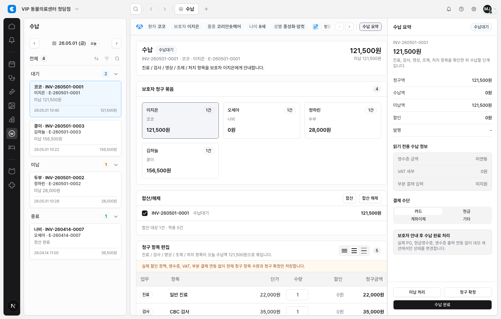

수납 청구 항목 테이블 shared primitives 적용
DEN-264에서 만든 공통 테이블 헤더/셀 텍스트 정책을 수납 청구 항목 테이블에 제한 적용했다. 이제 청구 항목 테이블도 헤더 역할, resize 제외 정책, 셀 텍스트 줄 수 정책을 코드에서 명시적으로 읽을 수 있다.
요청
- 수납 청구 항목 테이블에
EmrTableHeaderCell,EmrTableCellText를 제한 적용한다. - 항목명처럼 의미 손실이 큰 긴 텍스트만 2줄까지 허용하고, 금액/수량/할인 같은 scalar 값은 1줄로 유지한다.
- 전체 테이블 일괄 적용, 실제 sort/filter/resize 동작, 결제/DB/RLS 변경은 제외한다.
변경
src/features/billing/module.tsx에 청구 항목 컬럼 정책 메타데이터를 추가했다.- 청구 항목 헤더를
EmrTableHeaderCell로 교체하고 헤더 interaction/resize policy를 data attribute로 남겼다. - 업무, 항목, 단가, 할인, 청구금액 셀에
EmrTableCellText를 적용했다. - 항목 설명은
two-line-if-long, 업무/금액/할인은one-line을 사용한다. - 수량 입력, 할인, 청구금액 같은 편집/표시 전용 재무 컬럼은 resize affordance policy에서 제외했다.
tests/billing.spec.ts에 헤더/셀 primitive DOM 계약 검증을 추가했다.
왜 중요한가
수납 화면은 금액 정렬과 수량 입력 안정성이 중요한 financial-edit-grid다. 이번 변경으로 긴 항목명은 읽을 수 있게 남기되, 금액과 계산 값은 한 줄 정렬을 유지해서 표 스캔과 결제 확인 흐름이 흔들리지 않는다.
검증
npx eslint src/features/billing/module.tsx tests/billing.spec.ts통과npx tsc --noEmit통과npx playwright test tests/billing.spec.ts -g "billing workspace renders waiting invoice, guardian group, editable lines, and payment actions" --reporter=line통과npx playwright test tests/billing.spec.ts --reporter=line4 passednpm run lint통과, 기존 warning 5개 유지npm run docs:check통과- mock auth Browser QA 통과: 로그인 화면이 아니라 실제 수납 청구 항목 테이블을 캡처했다.
Evidence
캡처 파일:
docs/completed/design/evidence/2026-05-24-den-266-billing-table-primitives.png

범위 밖
- DEN-250, DEN-251, DEN-264, DEN-265 상태는 변경하지 않았다.
- 실제 sort/filter/column resize 동작은 추가하지 않았다.
- Supabase, DB migration, RLS, 서버 권한, 결제 제공자 연동은 건드리지 않았다.
주의
Browser QA 중 mock/session 권한 요청에서 기존 401/403 리소스 로그가 관찰됐다. 화면은 정상 렌더링됐고 DOM 계약과 수납 workflow 검증은 통과했지만, 이 로그 자체는 별도 auth/session 정리 이슈에서 다루는 편이 맞다.
다음 단계
Human Review에서 수납 청구 항목 테이블의 줄 수, 금액 정렬, 수량 입력 안정성을 확인한 뒤 다음 모듈 채택 범위를 별도 이슈로 고른다.